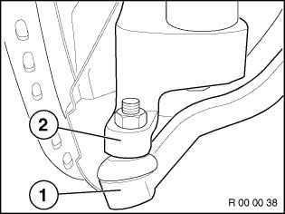
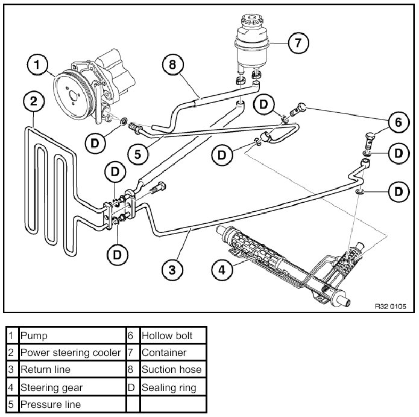

00 00 ... Steering Components: Checking For Zero Clearance, Leaks, Damage and Wear
00 00 ... Steering Components: Checking For Zero Clearance, Leaks, Damage And Wear

Checking play:
- For hydraulically assisted steering systems, the engine must be running
- For electrically assisted steering systems, the ignition must be on
- Steering wheel: Move steering wheel back and forth and check for play
- Tie rod joint: There must be no play between the track-rod arm (2) and track rod joint (1)
Checking for leaks:
The following illustration shows the arrangement of the power steering components and lines.


Check all visible connections, hoses, lines and steering gear for traces of fluid.
Checking for damage and wear:
Check gaiters, flexible disc and axle and tie rod sleeves for damage (e.g. cracks, holes), for leaks or missing clamping bands on gaiters.